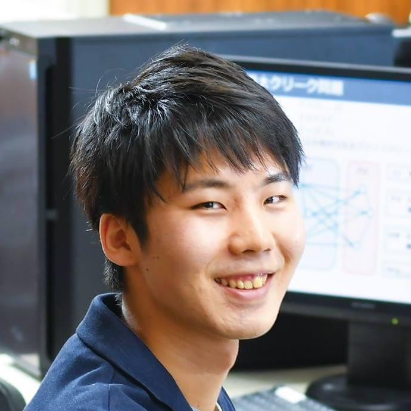

KAZUHO KANAHARA
PORTFOLIO
ABOUT

名前：金原 一歩 (カナハラ カズホ) 生年月日： 1995年04月14日 生
学歴 2011年 04月 岡山県立岡山工業高等学校 入学 2014年 03月 岡山県立岡山工業高等学校 卒業 2014年 04月 岡山理科大学 工学部 情報工学科 入学 2018年 03月 岡山理科大学 工学部 情報工学科 卒業 2018年 04月 岡山理科大学大学院 工学研究科 情報工学専攻 修士課程 入学 2020年 03月 岡山理科大学大学院 工学研究科 情報工学専攻 修士課程 修了 2020年 04月 岡山理科大学大学院 工学研究科 システム科学専攻 博士後期課程 入学 2023年 03月 岡山理科大学大学院 工学研究科 システム科学専攻 博士後期課程 修了予定
職歴（アルバイト含む・フルタイム勤務経験なし） 2013年 01月 ~ 2018年 3月 コンビニエンスストア 2015年 08月 ~ 2018年 3月 中学生高校生向け塾 2017年 04月 ~ 2018年 3月 岡山理科大学 工学部 情報工学科 Student Assistant 2018年 04月 ~ 2020年 3月 岡山理科大学 工学部 情報工学科 Teaching Assistant 2020年 04月 ~ 現在 学校法人加計学園(岡山理科大学) Reseach Assistant 2020年 05月 ~ 現在 学校法人創志学園(創志学園高等学校) 非常勤講師（情報）
2017年より現在まで、岡山理科大学で組合せ最適化問題に対する近似解法を研究 趣味：映画鑑賞
NATIONAL QUALIFICATIONS
機械保全（電気系保全作業） 3級機械保全技能士
2012年08月 合格
電気機器組立て（シーケンス制御作業） 3級電気機器組立て技能士
2013年03月 合格
ITパスポート試験
2013年04月 合格
基本情報技術者試験
2013年10月 合格
準中型自動車第一種運転免許
2014年05月 取得
応用情報技術者試験
2014年10月 合格
情報セキュリティスペシャリスト試験
2016年10月 合格
情報処理安全確保支援士
2018年10月 登録
高等学校教諭専修免許状(工業)
2020年03月 取得
高等学校教諭一種免許状(情報）
2020年05月 取得
普通自動二輪運転免許
2020年05月 取得
3級ファイナンシャル・プランニング技能士試験
2021年03月 合格
RESEARCH
最大クリーク問題に対する改良k-opt局所探索法.
金原 一歩, 片山 謙吾.
平成29年度(第68回)電気・情報関連学会中国支部連合大会.
平成29年度 (第68回) 電気・情報関連学会中国支部連合大会実行委員会.
岡山, 10月, 2017年.
A restart diversification strategy for iterated local search to maximum clique problem.
K. Kanahara, K. Katayama, T. Okano, E. Kulla, T. Oda, and N. Nishihara.
Complex, Intelligent, and Software Intensive Systems.
Matsue, Japan, July, 2018.
国際会議発表 (査読あり).
最大クリーク問題に対する反復局所探索法における多様化戦略の導入.
金原 一歩, 片山 謙吾, 岡野 傑士, 西原 典孝.
第17回情報科学技術フォーラム.
一般社団法人電子情報通信学会, 一般社団法人情報処理学会.
福岡, 09月, 2018年.
Don’t Look Bit による変形可変深度探索法の高速化.
岡野 傑士, 金原 一歩, 片山 謙吾, 西原 典孝.
第17回情報科学技術フォーラム.
一般社団法人電子情報通信学会, 一般社団法人情報処理学会.
福岡, 09月, 2018年.
最大クリーク問題に対するk-opt局所探索法の改良.
金原 一歩,片山 謙吾, 岡野 傑士, 尾崎 亮, 西原 典孝, 舩曵 信生.
電子情報通信学会論文誌(A), Vol. J101-A, No. 10, pp. 260-264
10月, 2018年.
論文誌発表 (査読あり).
A Local Search based on Variant Variable Depth Search for the Quadratic Assignment Problem.
T. Okano, K. Katayama, K. Kanahara, N. Nishihara.
2018 IEEE 7th Global Conference on Consumer Electronics.
奈良, 10月, 2018年.
国際会議発表 (査読あり).
最大クリーク問題に対する多様化反復k-opt局所探索法.
金原 一歩, 片山 謙吾, 岡野 傑士, 西原 典孝.
平成30年度(第69回)電気・情報関連学会中国支部連合大会.
平成30年度(第69回)電気・情報関連学会中国支部連合大会実行委員会.
広島, 10月, 2018年.
2次割当問題に対する2-opt局所探索法とk-opt局所探索法の結合.
岡野 傑士, 片山 謙吾, 金原 一歩, 西原 典孝.
平成30年度(第69回)電気・情報関連学会中国支部連合大会.
平成30年度(第69回)電気・情報関連学会中国支部連合大会実行委員会.
広島, 10月, 2018年.
容量制約付きp-メディアン問題に対する修正アルゴリズムの検討.
三宅 孝史, 金原 一歩, 岡野 傑士, 片山 謙吾.
平成30年度(第69回)電気・情報関連学会中国支部連合大会.
平成30年度(第69回)電気・情報関連学会中国支部連合大会実行委員会.
広島, 10月, 2018年.
2次割当問題に対する2つの移動戦略に基づく2-opt局所探索法の検討.
小山 恵右, 岡野 傑士, 金原 一歩, 片山 謙吾.
平成30年度(第69回)電気・情報関連学会中国支部連合大会.
平成30年度(第69回)電気・情報関連学会中国支部連合大会実行委員会.
広島, 10月, 2018年.
最大クリーク問題に対する反復k-opt局所探索法の探索特性.
金原 一歩, 岡野 傑士, 片山 謙吾.
岡山理科大学紀要. A, 自然科学, Vol. 54, pp. 17-25
2018年.
2次割当問題に対する局所探索法の結合アルゴリズムの特性.
岡野 傑士, 金原 一歩, 片山 謙吾.
岡山理科大学紀要. A, 自然科学, Vol. 54, pp. 27-36
2018年.
最大クリーク抽出アルゴリズムMCTの高速化（2）.
松崎 空良,富田 悦次, 長尾 篤樹, 伊藤 大雄, 若月 光夫, 西野 哲朗, 片山 謙吾, 金原 一歩.
2018 年度冬のLA シンポジウム.
京都, 02月, 2019年.
最大クリーク問題に対する探索頻度情報にもとづく反復k-opt局所探索法の性能.
金原 一歩, 片山 謙吾, 富田 悦次, 松崎 空良.
第109回人工知能基本問題研究会.
人工知能学会.
長崎, 03月, 2019年.
グラフ彩色問題における解構築法の効率化.
金原 一歩, 片山 謙吾, 富田 悦次, 岡野 傑士, 三宅 孝史, 西原 典孝.
第18回情報科学技術フォーラム.
一般社団法人電子情報通信学会, 一般社団法人情報処理学会.
岡山, 09月, 2019年.
グラフ彩色問題における解構築法の効率化.
金原 一歩, 片山 謙吾, 富田 悦次, 岡野 傑士, 三宅 孝史, 西原 典孝.
コンピュテーション研究会2019年度11月.
一般社団法人電子情報通信学会
岡山, 09月, 2019年.
即時移動戦略に基づくk-opt局所探索法.
岡野 傑士, 片山 謙吾, 金原 一歩, 三宅 孝史, 西原 典孝.
第18回情報科学技術フォーラム
一般社団法人電子情報通信学会, 一般社団法人情報処理学会.
岡山, 09月, 2019年.
容量制約付きp-メディアン問題に対するk-opt局所探索法の性能評価.
三宅 孝史, 片山 謙吾, 金原 一歩, 岡野 傑士, 西原 典孝.
第18回情報科学技術フォーラム
一般社団法人電子情報通信学会, 一般社団法人情報処理学会.
岡山, 09月, 2019年.
最大クリーク問題に対する反復k-opt局所探索法の制限緩和について.
金原 一歩, 片山 謙吾, 岡野 傑士, 三宅 孝史, 西原 典孝.
令和元年度(第70回)電気・情報関連学会中国支部連合大会.
令和元年度(第70回)電気・情報関連学会中国支部連合大会実行委員会.
鳥取, 10月, 2019年.
2次割当問題に対する事前選択式可変近傍探索法.
岡野 傑士, 片山 謙吾, 金原 一歩, 三宅 孝史, 西原 典孝.
令和元年度(第70回)電気・情報関連学会中国支部連合大会.
令和元年度(第70回)電気・情報関連学会中国支部連合大会実行委員会.
鳥取, 10月, 2019年.
容量制約なしp -メディアン問題に対する局所探索法の容量制約付き問題への適用.
三宅 孝史, 片山 謙吾, 金原 一歩, 岡野 傑士,西原 典孝.
令和元年度(第70回)電気・情報関連学会中国支部連合大会.
令和元年度(第70回)電気・情報関連学会中国支部連合大会実行委員会.
鳥取, 10月, 2019年.
営業先巡回路自動生成システム.
金原 一歩, 片山 謙吾.
OUSフォーラム2019アブストラクト集.
岡山理科大学.
岡山, 11月, 2019年.
最大クリーク問題に対するメタ戦略アルゴリズムの探索特性.
金原 一歩, 三宅 孝史, 岡野 傑士, 片山 謙吾.
岡山理科大学紀要. A, 自然科学, Vol. 55, pp. 35-43
2019年.
容量制約付きp-メディアン問題に対する局所探索法の探索性能の調査.
三宅 孝史, 金原 一歩, 岡野 傑士, 片山 謙吾.
岡山理科大学紀要. A, 自然科学, Vol. 55, pp. 45-53
2019年.
反復局所探索法における探索の多様化に関する調査.
岡野 傑士, 金原 一歩, 三宅 孝史, 片山 謙吾.
岡山理科大学紀要. A, 自然科学, Vol. 55, pp. 25-34
2019年.
The Performance of a Metaheuristic Algorithm for Finding a Maximal Weight Clique Problem in the Fill-in-Blank.
K. Kanahara, K. Katayama, N. Funabiki, E. Tomita.
2020 8th International Conference on Information and Education Technology.
岡山, 03月, 2020年.
国際会議発表 (査読あり).
Approach of Fuzzy Theory and Hill Climbing Based Recommender for Schedule of Life.
N. Saito, T. Oda, Y. Nagai, K. Kanahara, M. Hirota, K. Katayama.
2020 IEEE 2nd Global Conference on Life Sciences and Technologies.
京都, 03月, 2020年.
国際会議発表 (査読あり).
Speeding-up of Construction Algorithms for the Graph Coloring Problem.
K. Kanahara, K. Katayama, T. Miyake, E. Tomita
Advances on Broad-Band Wireless Computing, Communication and Applications.
The 15th International Conference on Broadband and Wireless Computing, Communication and Application.
オンライン, 10月, 2020年.
国際会議発表 (査読あり).
A hyper-heuristic for the maximum clique problem
K. Kanahara, K. Katayama, E. Tomita.
The Institute of Electronics, Information and Communication Engineers Technical Report
IEICE-COMP.
オンライン, 03月, 2021年.
最大クリーク抽出アルゴリズムMCTのさらなる高速化
柳澤士朗,富田悦次, 片山謙吾, 金原一歩, 戸田貴久, 伊藤大雄, 若月光夫, 西野哲朗.
電子情報通信学会技術研究報告.
IEICE-COMP.
オンライン, 03月, 2021年.
SKILL

C/C++
経験年数11年
私はこれまで組合せ最適化問題に対するアルゴリズム研究を行っており、 主に代表的な組合せ最適化問題のである最大クリーク問題(MCP)やMCPを拡張した問題である最大重みクリーク問題(MWCP)やグラフ彩色問題(GCP)、2次割当問題(QAP)、容量制約付きp-メディアン問題（CPMP)などに対する近似解法（アルゴリズム）の研究を行ってきた。 これらの組合せ最適化問題は「SNSのコミュニティー探索」「時間割/シフトの最適化」「工場や避難所、店舗などの建築場所の最適な選定」など多くの実用上重要な応用を有する問題である。 これらのアルゴリズムはC/C++で開発し、他にもスマートシティにおける「ドローンとトラックのハイブリッド輸送経路システム」や企業との共同研究で「工場における加工ラインの最適化」などの開発または開発補助。
教育
経験年数6年
塾で中学生・高校生を対象に数学・理科・物理を教育。 学部4年生時にStudent Assistantとして、実習補助業務を行い、修士1年~修士2年の間Teaching Assistantとして同じく実習補助業務に従事。 修士1年~現在まで、各種基礎的な内容から研究的な内容まで後輩に指導。 また、2020年5月より現在まで、高校生に対して「情報科目」を授業/実習を行い各種検定やPythonの教育などを非常勤講師として行っている。

Python
経験年数5年
研究でのデータ分析、自動操作などのスクリプトはPythonを使用しており、他にもディープラーニング（Deep Learning）による移動平均線などのテクニカル指標を用いた株価予測、 日英機械翻訳アルゴリズム、そのユーザーが検索した履歴からユーザーの嗜好を分析・推測し観光地推薦を行うシステム、 ゲーム系の分野ではユーザーの行動を推測、説得、ブラフを行う高度なコミュニケーションを行う人狼ゲームのAI開発、 ゲーム会社でのインターンシップでユーザーデータを用いたユーザーデータ分析、分析結果の利用など行った。
Linux(Ubuntu)
経験年数5年
研究室全体での開発環境及び実験環境構築、一部大学院授業の実習環境構築担当。
Server/Network
経験年数5年
研究室内全体サーバー/ネットワーク運用保守及び必要機器の選定調達担当。

Java
経験年数3年
官公庁と大学連携によるスマートシティ推進プロジェクトでのユーザーの要望によってユーザーを自動的に迎えに行くスマート乗合タクシーの経路を推薦するシステムの開発補助。 大学での実習により要件定義・仕様書作成からチームでWebシステムの開発。

C#
経験年数3年
脳波読み取り分析アプリや人狼知能エージェント（人狼AI）の作成補助。

JavaScript
経験年数1年
Google Maps APIを利用して、営業社員が効率良く営業先を回り、会社に戻ってくるルートを現在の交通状況に応じた最適なルートを提案を行う営業先巡回経路Webアプリを開発し産学連携フォーラムで発表。

Vue.js
経験年数1年
動画や映画などをレビューするWebサイトをVue.jsを利用し開発中。

AWS
経験年数1年
レビューサイト運用のためAWS(EC2, Cloud9, DynamoDB, Lambda, API Gateway)を使用。

VisualBasic.Net
経験年数1年
授業や研究で簡易な操作を自動化マクロ/アプリケーションの作成。

Unity
経験年数1年
初心者向け入門書２冊分の学習及びVtuberハッカソン2019での使用。

PHP
経験年数1年
高校生向けWebデザインコンテスト用サイト作成のためLAMPP/XAMPPの学習。
SQL
経験年数1年
高校生向けWebデザインコンテスト用サイト作成のためLAMPP/XAMPPで使用及び各種資格で学習。
Struts
経験年数1年
大学でのWebシステム構築実習で使用。
CONTACT
お問い合わせは、
メールにてお願いいたします。